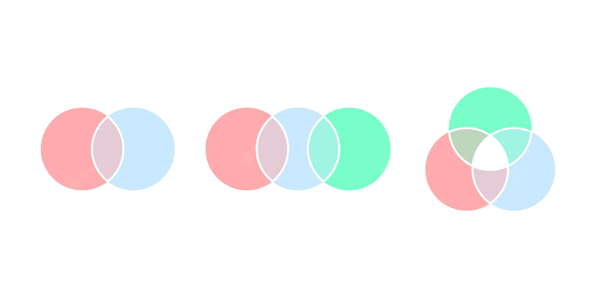
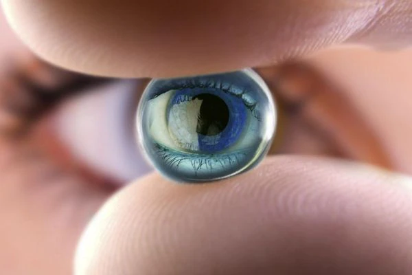
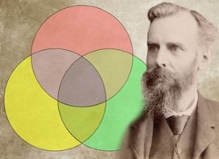
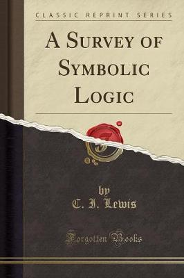

LOS DIAGRAMAS DE VENN

Los diagramas de Venn son esquemas usados en la teoría de conjuntos, tema de interés en matemáticas, lógica de clases y razonamiento diagramático. Estos diagramas muestran colecciones de cosas por medio de líneas cerradas.
SE COMPONE Y SE USA DE:
Un diagrama de Venn usa círculos que se superponen u otras figuras para ilustrar las relaciones lógicas entre dos o más conjuntos de elementos. A menudo, se utilizan para organizar cosas de forma gráfica, destacando en qué se parecen y difieren los elementos. Los diagramas de Venn, también denominados "diagramas de conjunto" o "diagramas lógicos", se usan ampliamente en las áreas de matemática, estadística, lógica, enseñanza, lingüística, informática y negocios. Muchas personas los vieron por primera vez en la escuela cuando estudiaron Matemática o Lógica, ya que los diagramas de Venn se convirtieron en una parte del plan de estudio de la "nueva Matemática" en la década de 1960. Estos pueden ser diagramas sencillos que involucran dos o tres conjuntos con algunos elementos o pueden volverse muy sofisticados, por ejemplo, en presentaciones en 3D, ya que utilizan seis o siete conjuntos o más. Se usan para hacer un análisis detallado y para representar cómo se relacionan los elementos entre sí dentro de un "universo" o segmento determinado. Los diagramas de Venn permiten a los usuarios visualizar los datos de forma clara y con gran alcance y, por este motivo, se utilizan comúnmente en presentaciones e informes. Se relacionan estrechamente con los diagramas de Euler, pero se diferencian en que estos últimos omiten los conjuntos si estos no contienen elementos. Los diagramas de Venn muestran las relaciones incluso si un conjunto está vacío.
Historia
Los diagramas de Venn llevan el nombre del lógico británico, John Venn.

Él escribió sobre ellos en un artículo redactado en 1880 titulado "De la representación mecánica y diagramática de proposiciones y razonamientos" en la revista "Philosophical Magazine and Journal of Science".
Pero las raíces de este tipo de diagrama se remontan a un período muy anterior, al menos 600 años atrás. Alrededor del año 1200, el filósofo y lógico Ramon Llull (Raimundo Lulio en español) de Mallorca, usó un tipo de diagrama similar, escribió la autora M.E. Baron en un artículo redactado en 1969 que realizaba un seguimiento de su historia. Ella también atribuye el crédito al matemático y filósofo alemán, Gottfried Wilhelm von Leibnitz de haber dibujado diagramas similares a finales de 1600.
En la década de 1700, el matemático suizo Leonard Euler (que se pronuncia Oy-ler) inventó lo que luego se conocería como "diagrama de Euler", el predecesor más directo del diagrama de Venn. De hecho, John Venn se refería a sus propios diagramas como "círculos de Euler" y no "diagramas de Venn". El filósofo estadounidense Clarence Irving (C.I.) Lewis publicó por primera vez el término "diagramas de Venn" en su libro escrito en 1918 llamado, "A Survey of Symbolic Logic".

Los diagramas de Venn continuaron evolucionando en los siguientes 60 años con avances de la mano de expertos, como David W. Henderson, Peter Hamburger, Jerrold Griggs, Charles E. “Chip” Killian y Carla D. Savage. Su trabajo se centraba en los diagramas de Venn simétricos y su relación con los números primos o aquellos indivisibles por otros números que no sean 1 y el número mismo. Uno de estos diagramas simétricos, basado en el número primo 7, se conoce ampliamente en las esferas matemáticas como "Victoria".
Otros nombres destacados en el desarrollo de los diagramas de Venn son A. W. F. Edwards, Branko Grunbaum y Henry John Stephen Smith. Entre otras cosas, modificaron las figuras en los diagramas para permitir una representación más sencilla de los diagramas de Venn en un número cada vez mayor de conjuntos